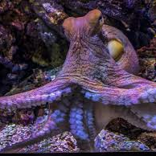
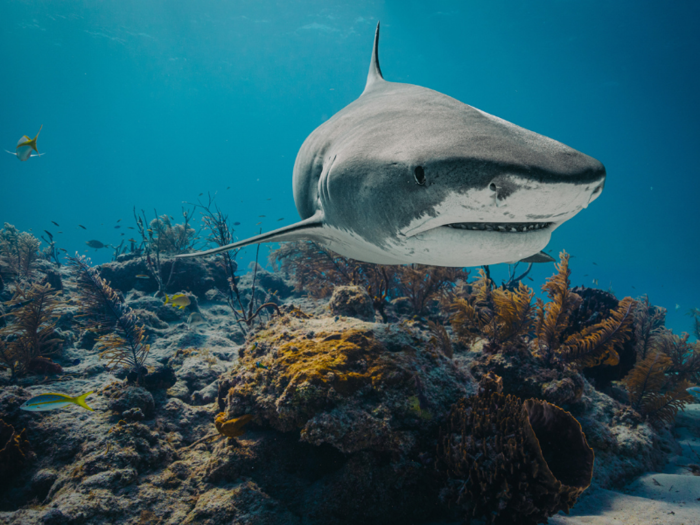
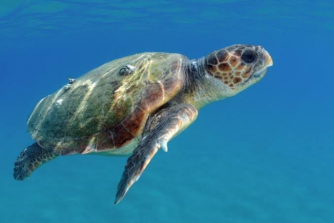
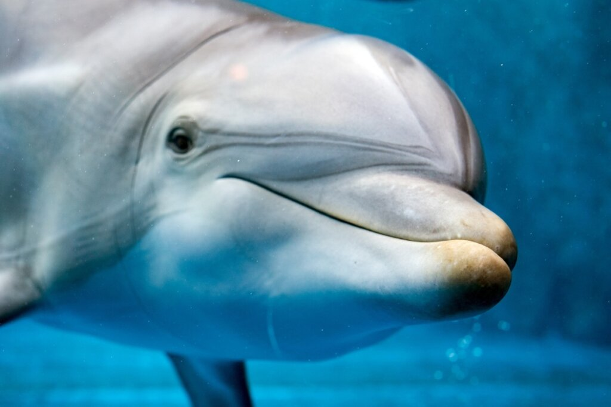
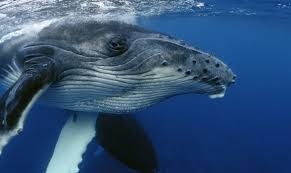
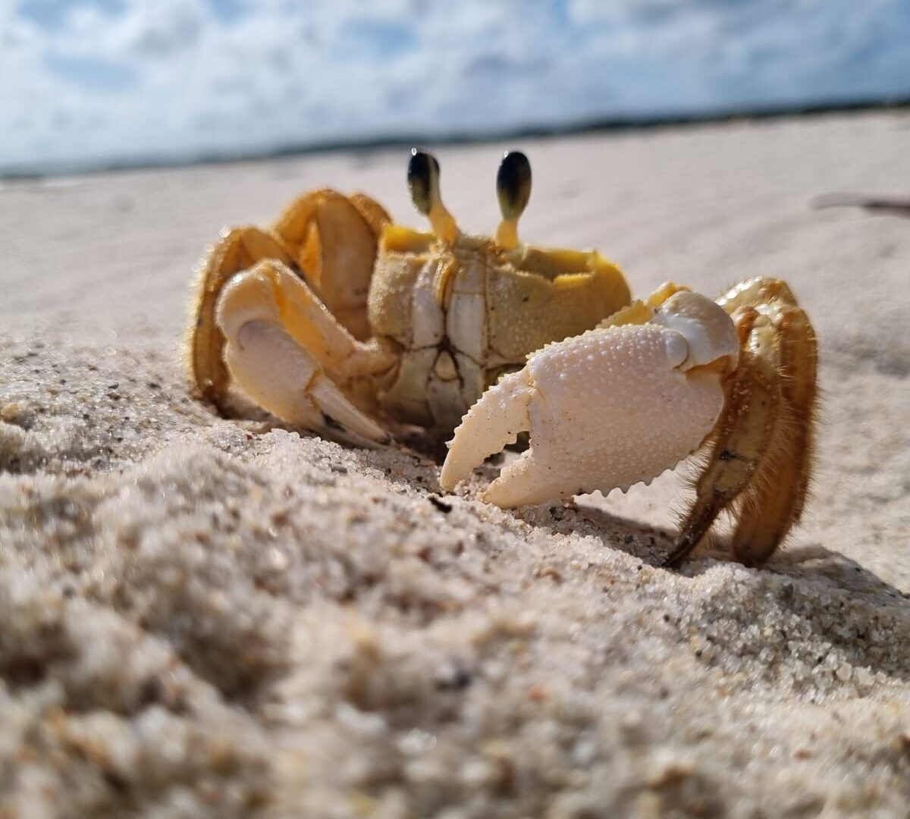
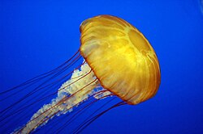
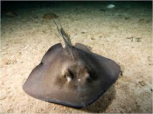
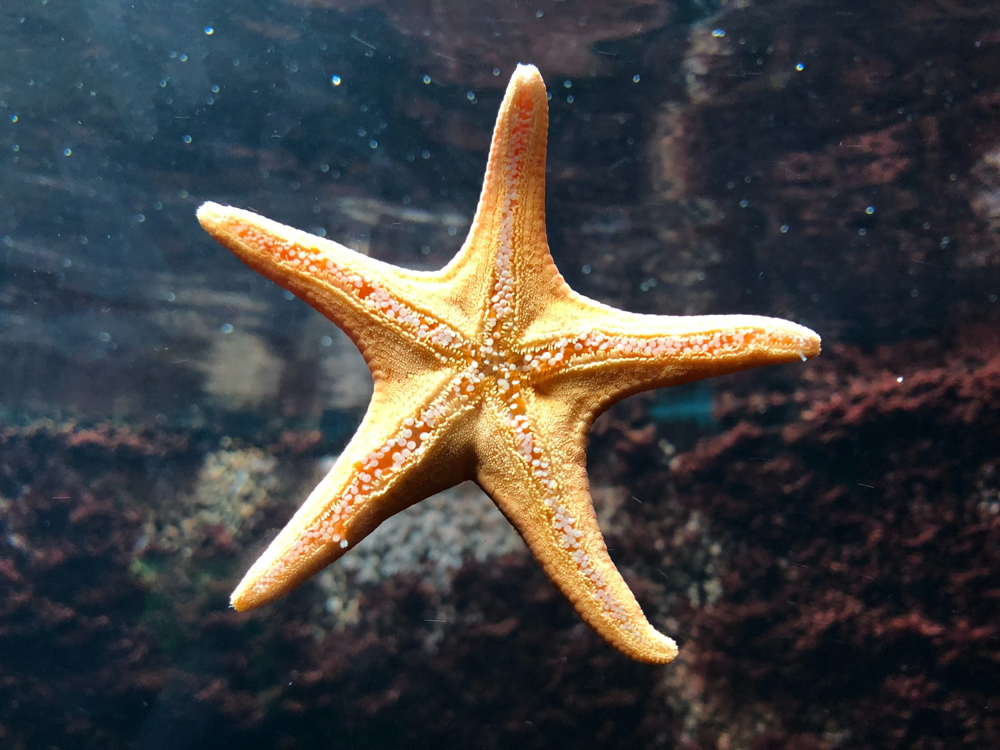

ANIMAIS MARINHOS
-

Polvo
Meu pai dizia que mais vale um coração bom do que três... mas e os polvos? Eles possuem três corações, oito braços e uma inteligência impressionante! Não é à toa que são considerados um dos animais mais espertos dos oceanos.
-

Tubarão
Os tubarões são os peixes mais famosos do cinema e dos jogos!! Eles com seus dentes afiados são peixes cartilaginosos, que respiram por brânquias, e possuem sentidos super apurados podendo sentir o cheiro de suas presas a grandes distâncias.
-

Tartaruga
Se algum dia um peixe te perguntar quanto tempo uma tartaruga vive, pode afirmar que mais de 100 anos! Além de viverem por tanto tempo, elas possuem um casco superpoderoso e viajam pelos oceanos e sempre encontram o caminho de volta para casa.
-

Golfinho
Dizem que todo navio precisa de uma boa tripulação... os golfinhos já descobriram isso faz tempo! Vivem em grupos, se comunicam por sons e estão entre os animais mais inteligentes dos oceanos.
-

Baleia
Alguém já te disse que tamanho não é documento? As baleias mostram que isso nem sempre é verdade! Elas são os maiores animais do planeta, respiram ar como nós e algumas ainda encantam os mares com seus famosos cantos.
-

Caranguejo
Nem todos conseguem sempre seguir em frente...os caranguejos preferem ir de lado!Com suas pinças afiadas e uma carapaça resistente, é um dos moradores mais curiosos das praias e manguezais
-

Água-viva
Imagina se já é ruim discutir com pessoas... agora imagina com seres que nem coração têm, como as águas-vivas! Elas existem há mais de 500 milhões de anos e usam seus tentáculos para capturar alimento e se defender.
-

Arraia
Nem tudo que está enterrado na areia é um tesouro! Muitas arraias gostam de descansar escondidas no fundo do mar, deixando apenas os olhos de fora. E, quando começam a nadar, parecem até estar voando debaixo d'água!
-

Estrela-do-mar
Um dia, meu imediato perdeu um braço em batalha... depois disso, vivia dizendo que seu sonho era ser uma estrela-do-mar! Afinal, algumas espécies conseguem regenerar seus braços e continuar a aventura como se nada tivesse acontecido..